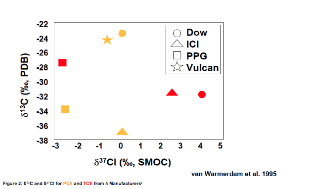
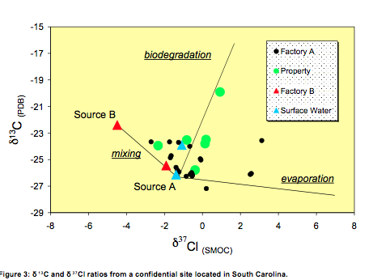
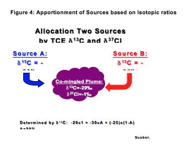

Differences have been noted in the isotopic composition of various chlorinated solvents by manufacturer. Figure 2 shows the δ13C and δ37Cl isotope distribution for various manufacturers of perchloroethene (PCE) and trichloroethene (TCE). This shows that these two isotopic elements are different for each manufacturer, providing a fingerprint of the source manufacturer.
Figure 2: δ13C and δ37Cl for PCE and TCE from 4 Manufacturers

Isotopically, manufactured TCE is significantly heavier than TCE produced from the biodegradation of PCE, so it is relatively straightforward to differentiate. This can be a critical piece of information that could not likely have been determined from concentration data alone.
Figure 3 shows the isotopic interpretation of the differing fate mechanisms that occurred for two TCE releases at a confidential site in South Carolina: biodegradation, mixing between two sources, and evaporation. The majority of δ13C and δ37Cl ratios at the lower concentrations of TCE are heavier than the highest concentration as a result of fractionation due to biodegradation. Some δ13C isotope ratios are heavier as a result of evaporation, while mixing between Source A and Source B has resulted in an increase in δ37Cl ratios compared to Source A.

Figure 3: δ 13C and δ 37Cl ratios from a confidential site located in South Carolina.
Figure 4 illustrates how one can differentiate the relative contribution from two sources in a mixed plume. For each monitoring point in the mixing zone depicted in Figure 3, the relative contribution from each source (A and B) can be determined.
